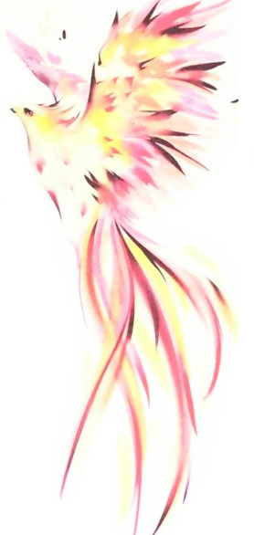

Kate & Olga
K&O Gallery

My sister and I are not the professional painters. However, painting is an indispensible part of our life.
It makes it brighter and less stressful, gives us a lot of possitive emotions and encourages us to try
absolutely new and extraordinary things.
Olga


As far as we live in one of the largest cities in the world, we are keen on spending free time close to
nature to forget about busy city life. It is the one of the reasons why nearly all our pictures are
dedicated to nature.
Kate